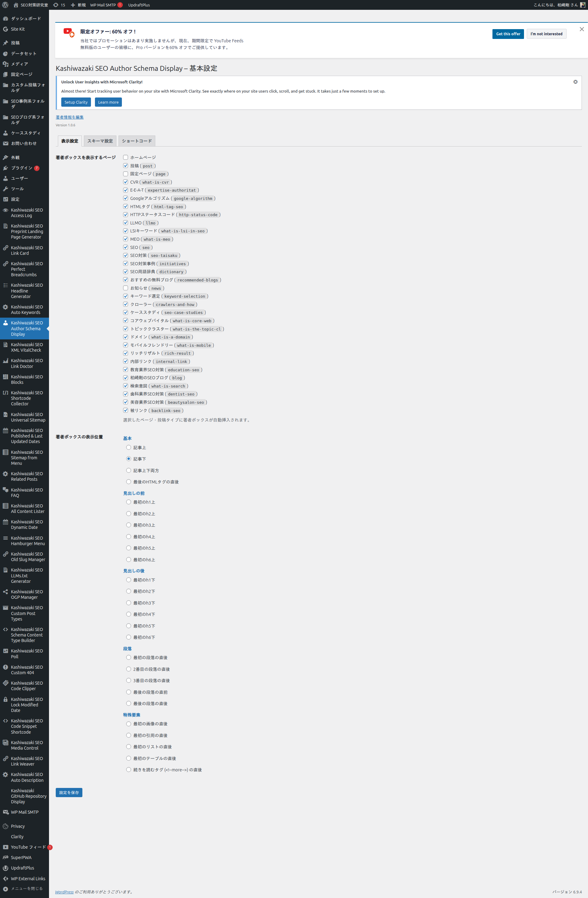
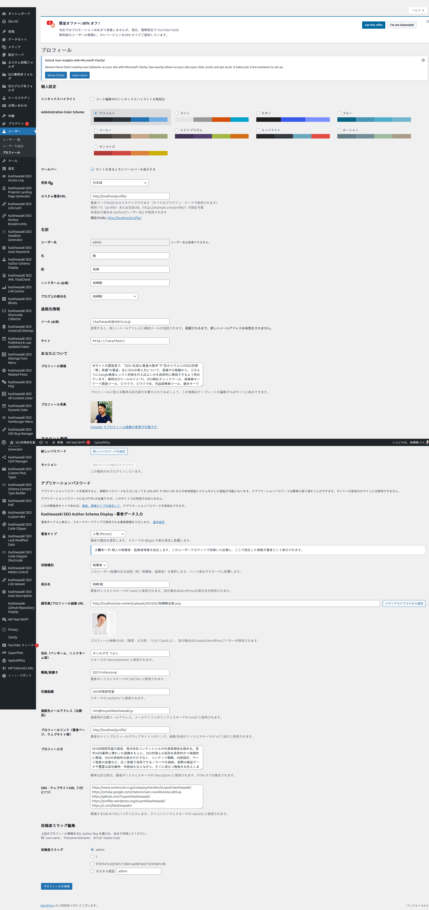

インストール・初期設定
プラグインのインストールから初期設定まで、ステップバイステップで解説します。
インストール手順
1
プラグインファイルを /wp-content/plugins/ にアップロード
2
WordPress管理画面「プラグイン」から有効化
3
左メニューに「Kashiwazaki SEO Author Schema Display」が追加される
メニューは管理画面左サイドバーの「Kashiwazaki SEO Author Schema Display」（ユーザーアイコン）からアクセスできます。
管理画面の構成

表示設定タブ
著者ボックスを表示するページ
投稿タイプのチェックボックスで選択
著者ボックスの表示位置
基本（4種）、見出しの前（6種）、見出しの後（6種）、段落（5種）、特殊要素（5種）の27種類
プロフィール設定

1
ユーザー > プロフィール に移動
2
「Kashiwazaki SEO Author Schema Display - 著者データ入力」セクションまでスクロール
3
著者タイプ（人物/組織/法人）を選択
4
表示名・肩書・プロフィール写真・経歴・SNS URLを入力
5
「プロフィールを更新」をクリック
プロフィール写真はメディアライブラリから選択するか、URLを直接入力できます。推奨サイズは正方形（例: 200x200px）です。